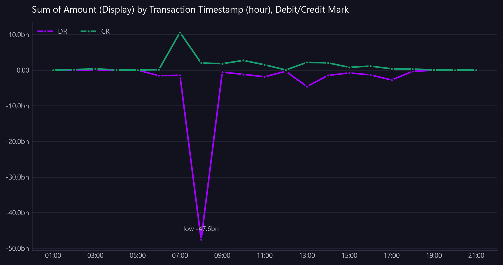

Sum of Amount (Display) by Transaction Timestamp (hour), Debit/Credit Mark
Credits against debits by hour for the most recent day, showing when money arrives versus when it leaves.
Asked as Show the intraday profile of ledger flows by hour, separating debits from credits, so I can see when money arrives versus when it leaves.

vs average % is a percentage and cannot share an axis with the amounts, so it is in the table only.
Commentary
The report provides an hourly breakdown of ledger flows, highlighting the timing of credits and debits. The most significant credit activity occurred at 07:00, with a substantial inflow of 10,570,319,665.49, which is marked as unusual. In contrast, the largest debit was recorded at 08:00, amounting to -47,617,516,429.05. The 07:00 hour stands out as a key period for credit transactions, while the 08:00 hour shows a significant outflow, indicating a potential area for further investigation by the operations team.
| Transaction Timestamp (hour) | CR | DR | vs average % | Unusual |
|---|---|---|---|---|
| 2026-08-18 01:00 | 0.00 | -102,690,662.51 | -100.00 | |
| 2026-08-18 02:00 | 119,452,086.85 | -97,509,558.16 | -90.40 | |
| 2026-08-18 03:00 | 393,276,712.85 | 0.00 | -68.30 | |
| 2026-08-18 04:00 | 10,861,398.58 | 0.00 | -99.10 | |
| 2026-08-18 05:00 | 508,068.20 | -3,361,638.06 | -100.00 | |
| 2026-08-18 06:00 | 111,107,226.50 | -1,570,526,672.26 | -91.00 | |
| 2026-08-18 07:00 | 10,570,319,665.49 | -1,466,296,259.02 | 752.50 | yes |
| 2026-08-18 08:00 | 1,997,041,763.76 | -47,617,516,429.05 | 61.10 | |
| 2026-08-18 09:00 | 1,799,679,116.80 | -569,785,082.66 | 45.20 | |
| 2026-08-18 10:00 | 2,717,233,523.42 | -1,206,548,196.41 | 119.20 | |
| 2026-08-18 11:00 | 1,485,146,750.64 | -1,871,763,472.12 | 19.80 | |
| 2026-08-18 12:00 | 42,124,105.48 | -332,962,369.25 | -96.60 | |
| 2026-08-18 13:00 | 2,162,085,104.36 | -4,620,001,824.21 | 74.40 | |
| 2026-08-18 14:00 | 2,023,916,548.24 | -1,490,175,877.08 | 63.20 | |
| 2026-08-18 15:00 | 783,619,335.39 | -795,312,765.11 | -36.80 | |
| 2026-08-18 16:00 | 1,117,785,153.90 | -1,341,060,157.55 | -9.80 | |
| 2026-08-18 17:00 | 355,654,945.07 | -2,783,445,747.00 | -71.30 | |
| 2026-08-18 18:00 | 319,009,628.14 | -340,373,202.52 | -74.30 | |
| 2026-08-18 19:00 | 23,225,512.91 | -53,119,529.36 | -98.10 | |
| 2026-08-18 20:00 | 4,871,226.60 | -51,380,566.13 | -99.60 | |
| 2026-08-18 21:00 | 0.00 | -2,002,547.99 | -100.00 |
Limitations of this view
- An hourly profile spanning 22 days is not an intraday view, so this covers the most recent day in the data (18 Aug 2026). Ask for a specific date, or for a daily breakdown, to see the whole period.
- 1 of 21 periods sit more than two standard deviations from the period average of 1,239,853,232 and are marked as unusual.
- The view is scoped to the value date range from 2026-07-20 to 2026-08-18.
- The amounts are translated using static synthetic FX rates to GBP.
- This is synthetic, non-production data.
Downloads
{kind=link}
The Markdown documents everything considered, so a reader can hand it to an AI and ask follow-up questions about this view.
How this was produced
{
"view": "business_ledger",
"sheet": "Business Ledger Txn View",
"source_file": "synthetic_liquidity_month.xlsx",
"mode": "aggregate",
"filters": [],
"group_by": [
"Transaction Timestamp (hour)"
],
"time_bucket": {
"column": "Transaction Timestamp",
"granularity": "hour"
},
"measures": [
"sum of Amount (Display)",
"split by Debit/Credit Mark"
],
"columns": [],
"sort_by": "Transaction Timestamp (hour)",
"limit": null,
"join": null,
"derived": [],
"currency_corrections": [
"1 of 21 periods sit more than two standard deviations from the period average of 1,239,853,232 and are marked as unusual.",
"An hourly profile spanning 22 days is not an intraday view, so this covers the most recent day in the data (18 Aug 2026). Ask for a specific date, or for a daily breakdown, to see the whole period."
],
"data_as_of": "2026-08-18T21:35:41",
"measure": "Amount (Display)",
"aggregation": "sum",
"rows_in_view": 9780,
"rows_after_filters": 402,
"rows_returned": 21,
"executed_at": "2026-08-20T11:30:08"
}